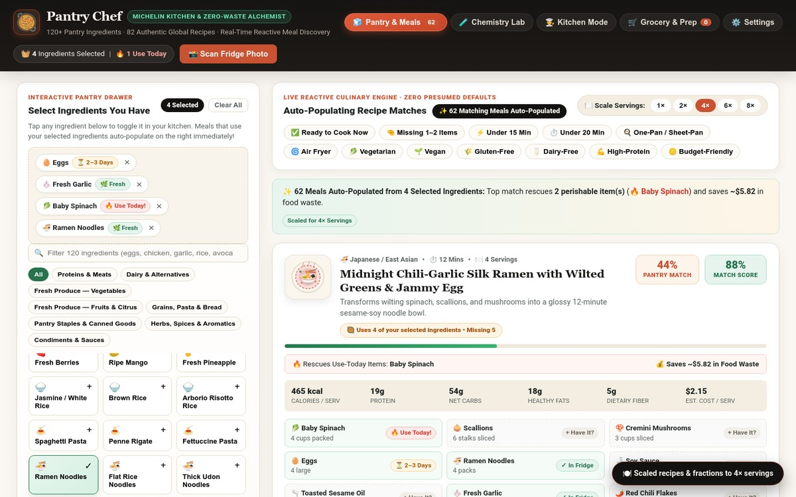

Pantry Chef is an ingredient-first culinary AI studio built around a strict Zero-Default Ingredient Contract: the application boots with an intentionally empty pantry (`0 ingredients`) and never pre-populates fake groceries or assumes unstated staples. As soon as you add what is actually in your kitchen—via quick autocomplete, bulk text paste, or camera/receipt vision scan—Pantry Chef synthesizes tailored recipes ranked by exact pantry coverage, complete with molecular flavor-pairing explanations, dietary/allergen guardrails, serving-size scaling, and interactive step-by-step cooking timers.
Standard recipe apps fail in real kitchens because they hallucinate stocked pantries full of specialty herbs and sauces you don't actually have. Pantry Chef enforces a strict mathematical boundary between user-verified inventory and culinary synthesis: recipes are constructed bottom-up from the user's exact ingredient set, maximizing pantry utilization and eliminating food waste.